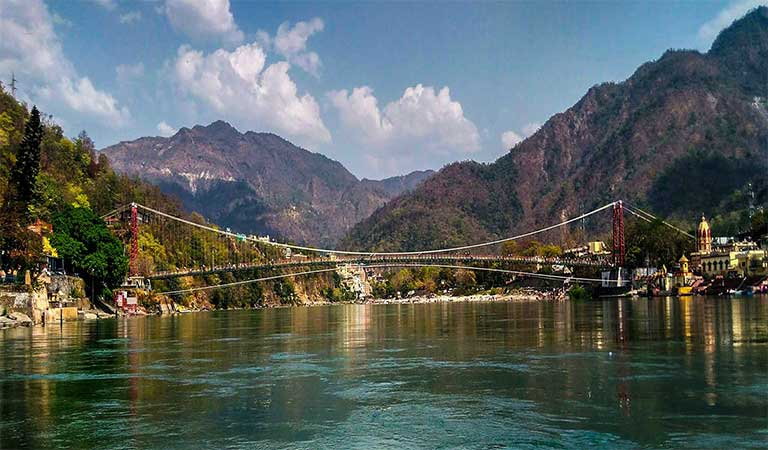
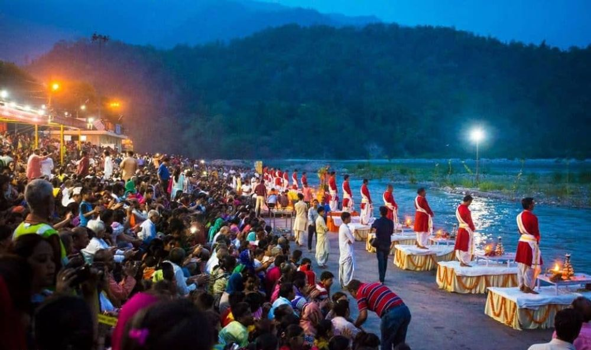
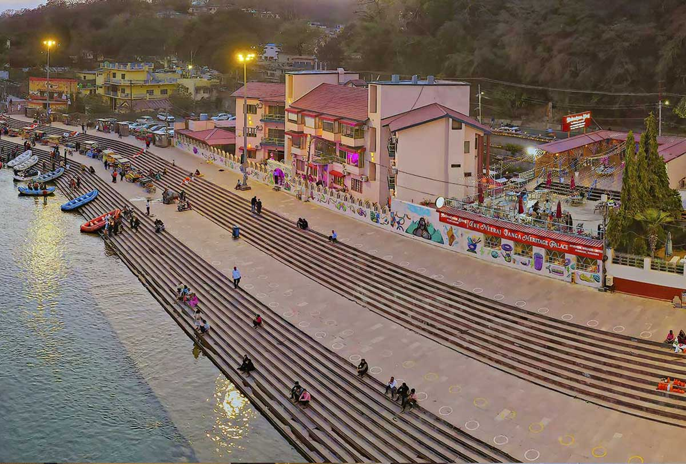

Rishikesh - The Yoga Capital
Rishikesh is a spiritual hub known for yoga, meditation, and adventure activities on the banks of the holy Ganges. It offers a perfect blend of tranquility, spirituality, and outdoor experiences for seekers and adventurers alike.

Laxman Jhula
Laxman Jhula is a famous iron suspension bridge over the Ganges River, offering panoramic views of Rishikesh’s temples and ghats. It is a symbolic landmark where pilgrims and tourists gather to experience the spiritual ambiance and scenic beauty.

Ram Jhula
Ram Jhula, similar to Laxman Jhula, is another iconic suspension bridge connecting important parts of Rishikesh. Surrounded by ashrams and cafes, it provides beautiful views of the flowing Ganges and bustling spiritual activities on its banks.

Triveni Ghat
Triveni Ghat is the main bathing and worship spot in Rishikesh, renowned for its evening Ganga Aarti ceremony. Pilgrims gather here to offer prayers while the river glows with thousands of floating lamps in a spiritually uplifting atmosphere.

Neeraj Ghat
Neeraj Ghat is a lesser-known but serene riverside spot popular for peaceful picnics and nature walks. It offers calm views of the Ganges and the surrounding hills, ideal for travelers seeking a quiet retreat away from the main tourist areas.
Tour Details
- Duration: 5 Days / 4 Nights
- Best Time to Visit: February to June, September to November
- Price: ₹12,000 per person
- Includes: Accommodation, Guided Yoga Sessions, River Rafting, Sightseeing